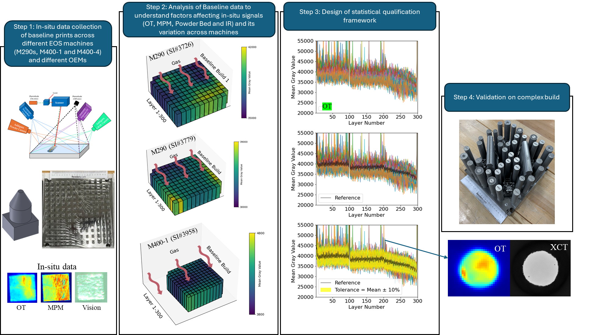
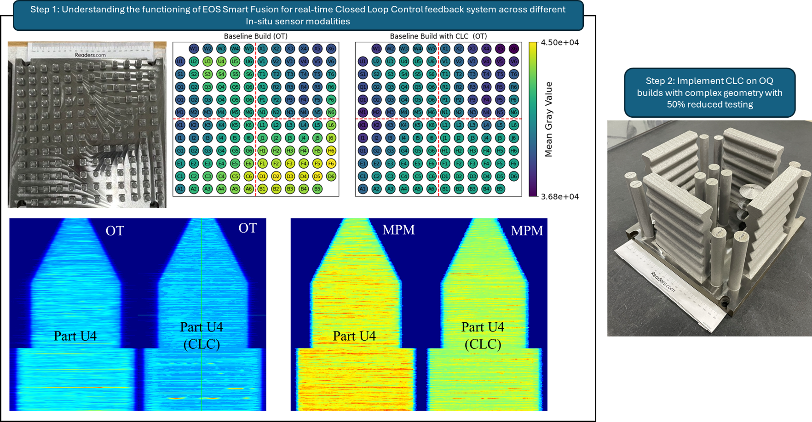

Internship: EOS-North America
Team - Yash Parikh and Ryan Smith
Project 1: Rapid Qualification of for Ti-6Al-4V Laser Powder Bed Fused parts using data-driven statistical framework using in-situ monitoring signals
Technical Details: Laser Powder Bed Fusion (LPBF) technology faces challenges in achieving consistent mechanical properties across parts printed on the same machine, different machines from the same OEM, or machines from different OEMs, due to the complex interplay of thermodynamics, process, material, machine, and environmental parameters.
This variability complicates the qualification process. The Delta Qual project aims to tackle these issues by developing a qualification framework that utilizes a broad array of in-situ sensors, including Optical Tomography (OT), Melt Pool Monitoring, Powder Bed, and Long-Wave IR cameras.
This framework is designed to establish a unique signature for each part, defining acceptable limits for in-situ signals. Parts whose signals fall outside these limits are flagged for further investigation. The study includes different EOS machines—M290, M400-1, M400-4—, the same M290 model situated in different locations, and concept M2 and AMCM machines from different OEMs to assess the deltas affecting part properties comprehensively.

Project 2: Rapid qualification, 50% reduced testing using real-time closed loop control (EOS OT smart fusion toolkit) for Ti-6Al-4V
Technical Details: he second ACCELERATE project builds on a similar concept to the Delta Qual project but incorporates the EOS Smart Fusion toolkit—an advanced optical tomography-based real-time monitoring and closed-loop control system.
This system adjusts the laser power in response to deviations from target gray values or signal values detected by the optical tomography. By doing so, the toolkit enables the LPBF machine to identify and rectify hot spots or cold spots during the printing process, effectively "healing" areas susceptible to defects caused by overheating.
The incorporation of closed-loop control in this manner is poised to significantly streamline the qualification process for additive manufactured parts, reducing the need for extensive experimental testing.
This proactive approach allows the Smart Fusion system to address real-time issues dynamically, enhancing both the efficiency and reliability of the manufacturing process.
